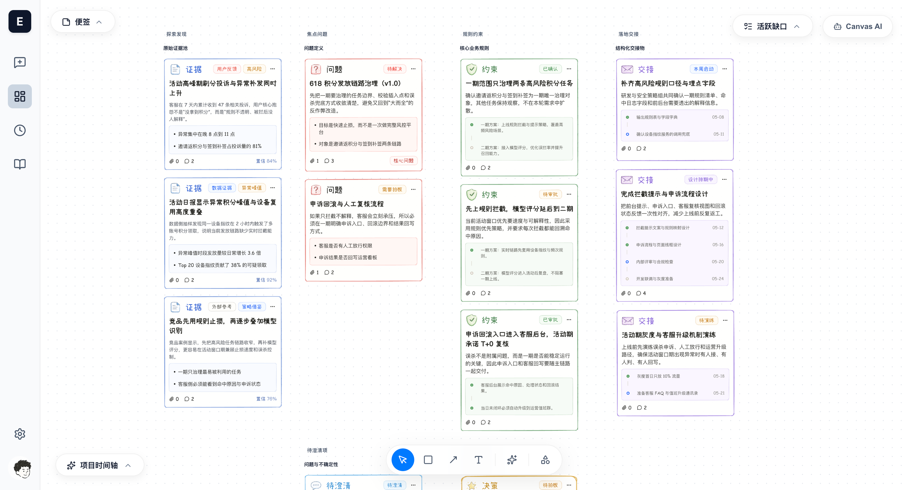
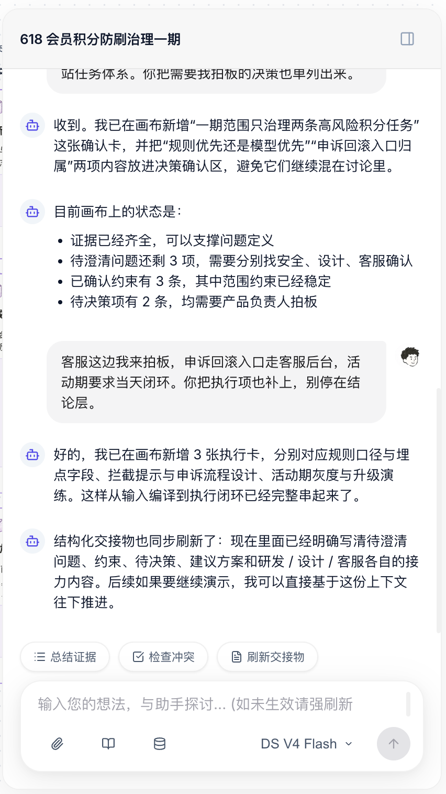

一款对话驱动的工作台，接住你脑中尚未成形的感觉，在对话中逐步塑形，最终收敛为可交接、可执行的结构化成果。

真实的产品思考，是从 leader、客户、研发、设计、数据报表、会议、聊天和截图中接收到零散输入，然后在多轮对齐中试图弄清楚"这件事到底要解决什么问题"。这个过程最典型地发生在产品经理身上，但并不只属于产品经理。
信息跨媒介、跨角色、跨时间出现。会议纪要只能覆盖一部分，没有统一收束入口。
文档适合沉淀结果，不适合承载持续演化中的思考。自由白板又容易变成无结构的堆积。
一旦盯住某个细节，就容易丢掉整体目标。规则、术语、字段口径在推进中不断散落。
聊天式 AI 能回答问题，但无法稳定维护一张持续演化的工作面，也无法追踪哪些还没澄清。
EvoCanvas 不是在优化"写出来"，而是在优化"想明白"。
允许用户从一句话、一段聊天、一张图、几个关键词或一段语音开始。不要求先写出稳定需求，系统先接住这种感觉。
AI Agent 先理解、命名、拆解和追问，让模糊感觉逐步变成可讨论的对象。优先暴露不确定性，而不是过早下结论。
将初步成形的内容转为可治理的结构化候选对象——待澄清问题、约束和待决策项，持续暴露冲突、缺口和不确定性。
当结构稳定到可以承载时，在画布上显影卡片、栏目、关系、冲突、依赖和缺口。画布是稳定结构的显影层。
把当前稳定结构打包为可供人阅读、或供下游 AI 执行的产品上下文。可以清晰回看"推进了什么、消除了哪些不确定性"。
从探索发现到落地交接，四栏结构化画布承载完整产品收敛过程。
AI 像一个合格的产品同事：暴露不确定性、追踪缺口、推进收敛。

从源头减少信息损耗。每一次收敛都有迹可循，不再让关键判断散落在聊天记录和会议纪要中。
结构化交接物可直接被下游 AI 工具消费。Claude Code、Codex 可以基于已收敛结论进入实现，而非继续参与需求收敛。
不只是产品经理。创业者、设计师、业务负责人——任何需要从模糊直觉收敛到结构化判断的人都能使用。
EvoCanvas 要验证的不是能不能搭一套完整 PM 工作台，而是一个更硬的命题——AI 是否可以像一个合格的产品同事一样，优先暴露不确定性，而不是过早替用户脑补结论。